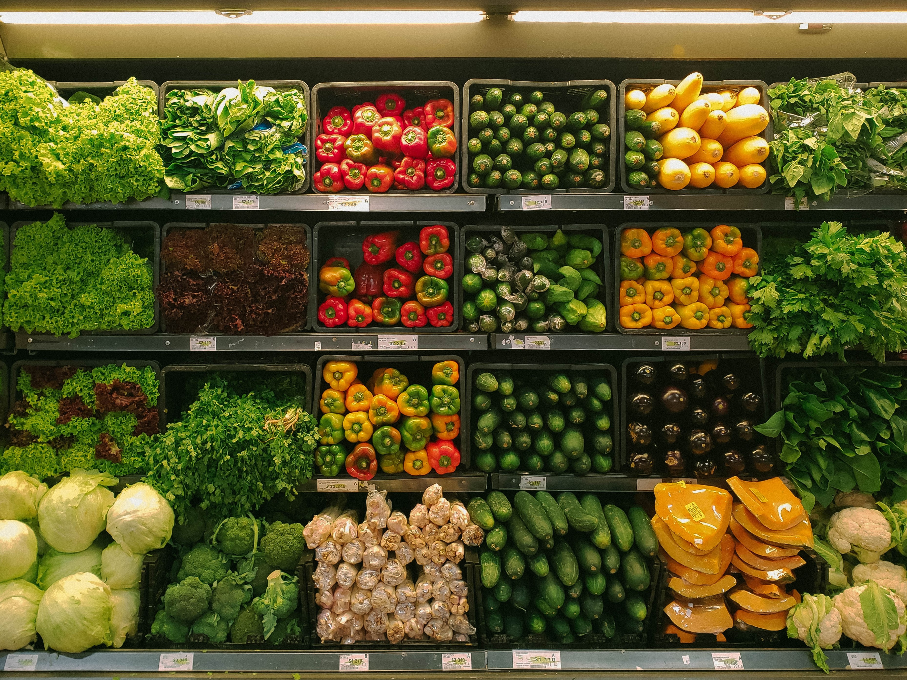

About me
Hi, I am Margarida! I am highly dedicated to learning data analytics tools and expanding my
skills with them. I have +8 years practice with Microsoft Excel and
6 months with SQL, Python and Tableau.
I am organized, proactive and solution-oriented, with +3 years experience
in handling communications in client oriented projects, coaching teams
and managing projects from beginning to end on defined timelines.
Scroll down to find some of the projects I have had the chance to work on
and feel free to contact me for any additional information.
My contacts can be found below!
2Market’s customers purchase behavior

Scenario: 2Market, a global supermarket, selling products online and in-store wanted to understand their customer purchase behavior.
In particular: The demographics of their customers; Which advertising channels seem to be the most effective;
Which products seem to sell the best and if that varies based on demographic.
Task: Analysed data sets in Excel/SQL and visualized/presented insights to inform business decision making using Tableau.
National Health Services resources and capacity utilization
Scenario: National Health Services (“NHS”) is a publicly funded healthcare system
in England that is incurring significant avoidable costs due to the large number
of patients that miss their medical appointments. At this stage of the project
the two main questions posed by the NHS are: Has there been adequate staff and
capacity in the networks? What was the actual utilization of resources?
Task: Manipulated data, created visualizations and recommend a course of action using Python.